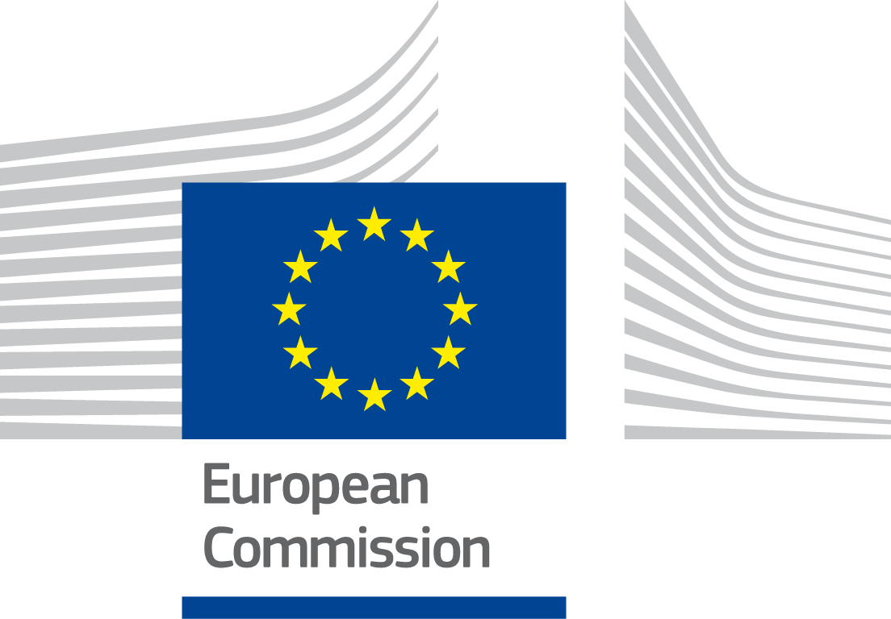
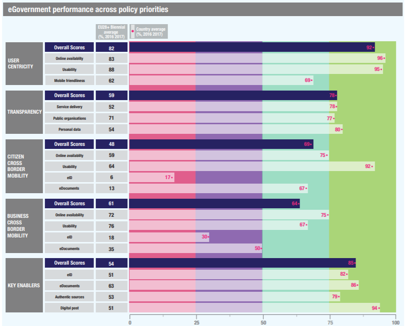

ISA2
Digital Government Factsheet 2019
Austria
ISA2
Table of Contents
Digital Government Highlights 17
Digital Government Political Communications 21
Digital Government Legislation 38
Digital Government Governance 62
Digital Government Infrastructure 96
Digital Government Services for Citizens 118
Digital Government Services for Businesses 163
Population: 8,822,267 inhabitants (2018)
GDP at market prices: 386,093.8 million Euros (2018)
GDP per inhabitant in PPS (Purchasing Power Standard EU 28=100): 127 (2017)
GDP growth rate: 2.7% (2018)
Inflation rate: 2.1% (2018)
Unemployment rate: 4.9% (2018)
General government gross debt (Percentage of GDP): 78.3% (2017)
General government deficit/surplus (Percentage of GDP): -0.8% (2017)
Area: 83.9 km2
Capital city: Vienna
Official EU language: German
Currency: Euro
Source: Eurostat (last update: 15 March 2019)
The following graphs present data for the latest eGovernment Indicators for Austria compared to the EU average. Statistical indicators in this section reflect those of Eurostat at the time the Edition is being prepared.
Percentage of individuals using the internet for interacting with public authorities in Austria | Percentage of individuals using the internet for obtaining information from public authorities in Austria | ||
Percentage of individuals using the internet for downloading official forms from public authorities in Austria | Percentage of individuals using the internet for sending filled forms to public authorities in Austria | ||
The graph below is the result of the latest eGovernment Benchmark report, which monitors the development of eGovernment in Europe, based on specific indicators. These indicators are clustered within four main top-level benchmarks:
These top-level benchmarks are measured using a life-events (e.g. mystery shopping) approach. Eight life events are included in the overall eGovernment performance score. Four of these life events were measured in 2017 and the other four were measured in 2016. The life events measured in 2017 were Regular business operations, Moving, Owning and driving a car and Starting a small claims procedure. The life events measured in 2016 are Business start-up, Losing and finding a job, Family life and Studying.

Source: eGovernment Benchmark Report 2018 Country Factsheet
Digital Government Political Communications
Building on the results of the Digital Roadmap Austria, a new and even more ambitious Digitisation Strategy for Austria is currently being developed under the auspices of the Ministry of Digital and Economic Affairs with the aim of positioning Austria as digital leader in Europe. The details of the strategy, including its timetable, priorities and piloting, are defined under the strategic framework of Digital Austria, in close cooperation with the Chief Digital Officer (CDO) Taskforce and the recently launched digitisation agency.
Digital Government Legislation
The new Federal Procurement Act was adopted on 20 August 2018 (Bundesvergabegesetz, BVergG 2018) and substitutes the Federal Procurement Act, which entered into force on 1 February 2006, replacing the Federal Procurement Act 2002 and repealing the eProcurement Regulation 2004. The new Federal Procurement Act 2018 finally transposed all the EU public procurement directives, including their provisions regarding eProcurement, into national law.
Digital Government Governance
The federal government has emphasised the importance of digital transformation for industry, society and public administration and has given it high priority in the government programme. Digitalisation Agency of the Federal Government was founded on 30 May 2018 and represents another important step to ensuring the success of Austria’s digital transformation. The Agency especially focuses on the support of SMEs, implements targeted projects and provides expertise and know how in the fields of innovation, digitisation and networking.
Digital Government Infrastructure
The established one-stop eGovernment platform help.gv.at has been expanded with further useful e-services (e.g. baby point, relocation, etc.) for citizens and relaunched under the new name oesterreich.gv.at. A dedicated app named Digitales Amt (Digital Office) is also available since 19 March 2019.
Digital Government Services for Citizens and Businesses
The oesterreich.gv.at App has been launched in order to provide a single, mobile and easy-to-use access for citizens to the most important administrative services.
Digital Roadmap Austria
On 18 February 2016, the Federal Government presented the draft for a Digital Roadmap Austria. The Digital Roadmap Austria is an initiative of the Austrian Federal Government, coordinated by the Federal Ministry for Digital and Economic Affairs and was set up in 2017. The Digital Roadmap is seen as key to optimally exploiting the digital transition that is taking place in order to strengthen Austria as a business location and innovation leader and foster the participation of all people in the digital world. The Digital Roadmap Austria as comprehensive digital strategy for Austria includes numerous eGovernment activities in different areas, such as digital infrastructure, security, data protection and trust, digital politics and public administration, digital society, digital economy, digital research and innovation and digital future, as explained in the coalition agreement.
The Digital Roadmap formulates a total of 12 guiding principles and incorporates around 150 specific measures in twelve areas of action, so benefits of the digitalisation process are identified and well-defined. With the Roadmap, the activities of all divisions are pooled in a joint strategy paper of the federal government for the first time. Because digitalisation is changing our world at great speed, the Digital Roadmap also remains “in motion”. It is a dynamic strategy paper that is continually adjusted to current developments relating to digitalisation and is thus a reliable common guideline in the direction of digital future.
Strategic Action Plan on Digitalisation
Building on the results of the Digital Roadmap Austria, a new and even more ambitious Digitisation Strategy for Austria is currently being developed under the auspices of the Ministry of Digital and Economic Affairs with the aim of positioning Austria as digital leader in Europe. The details of the strategy, including its timetable, priorities and piloting, are defined under the strategic framework of Digital Austria, in close cooperation with the Chief Digital Officer (CDO) Taskforce and the recently launched digitisation agency.
The Ministry for Digital and Economic Affairs is responsible for the monitoring and achievement of the set goals, defined together with the Chief Digital Officers (CDOs).
The process for the strategic action plan is streamlined in close cooperation between the newly established CDO Taskforce, together with the support of the academia.
The aim is to establish and further ensure Austria’s role as a leading digital nation to guarantee and expand prosperity, job opportunities, as well as the quality of life in the long term.
eGovernment Vision 2020 (2009 - 2020)
The Platform Digital Austria (PDÖ), being the coordination and strategy committee of the Federal Government for eGovernment in Austria, has formulated the principles for a continued fruitful cooperation in the field of eGovernment, which are included in the short document eGovernment Vision 2020. This document is not a legally binding strategy; it rather sets out the mission statement and the basic strategic principles to be followed in the years to come in relation to eGovernment initiatives. The guidelines of Vision 2020 are relevant to the objectives of the eGovernment Action Plan 2011-2015 for electronic public services launched by the European Commission on 15 December 2010. Establishing eID as a key enabler and advancing the inclusion with innovative public services, are among the priorities of the Austrian eGovernment strategy. The Vision 2020 particularly aims at development of the following areas: comfort and simplicity, increase in efficiency, reliability and security, transparency and openness, participation, innovation, businesses, national and international convergence and synergy.
Federal eGovernment Strategy
The Federal eGovernment Strategy, which is currently being revised, provides an efficient implementation of electronic government services, based on the basic premise that all businesses and citizens must be able to perform all the procedures of public administration quickly and easily, electronically and without having special technical expertise. To achieve this goal, the Austrian eGovernment strategies are based on the involvement and close cooperation between the federal state, cities and municipalities.
The Federal eGovernment Strategy is structured in a modular fashion:
Part I deals with online procedures from the perspective of the user and provides framework, objectives and implementation directives of online processes. Online processes or online transactions are official channels and contacts with authorities, which can be conducted electronically from citizens. They should be open 7 days a week around the clock.
Part II focuses on methods and procedures within the administration. Well-functioning automation-assisted methods require joint action by the authorities. Thus, standardised processes and systems that communicate with each other are necessary. Technical and organisational agreements must be respected and use common standards. For the realisation of electronic methods as such, it is therefore appropriate to analyse current business processes and where necessary, to restructure them.
The modules for online applications are provided by the Federal government to serve as a tool by which eGovernment applications can be created efficiently and safely. The MOA are components that will facilitate the use of electronic signatures and other applications such as delivery to the public agencies. The modules have been prepared on behalf of the Federal Chancellery and the Federal Ministry of Finance. By June 2005, they were placed under the open source license for Apache Software Foundation in version 2.0. The distributions of the modules and the associated source code are thus freely available to all users.
Several sample applications, like testing the Citizen Card, are open to public and private users. Some of these include: testing the citizen card, generate a toolkit for the generation of user certificates, provision of a citizen capsule (an emulation of a citizen card environment for test purposes and for the development of citizen card applications available) and a test mail message application.
The Federal eGovernment Strategy is based on a number of principles, like its proximity to citizens, trust and security, transparency, accessibility, usability, data security, sustainability and interoperability.
No political communication was adopted in this field to date.
No political communication was adopted in this field to date.
Digitales Amt Project
The Project Digitales Amt was launched with a Decision of the Austrian Council of Ministers of 15 January 2019 as a further important step to ensure that citizens' administrative procedures, as well as their contact with public authorities can be done completely electronically.
National Cyber Security Strategy
The Austrian National Cyber Security Strategy was implemented in 2013 and has been developed on the basis of the Security Strategy and is guided by the principles of the Austrian Programme for Critical Infrastructure Protection. The Austrian Cyber Security Strategy (Österreichische Strategie für Cyber Sicherheit, ÖSCS) is a comprehensive and proactive concept for protecting cyber space and the people in virtual space while guaranteeing human rights. It aims to enhance the security and resilience of Austrian infrastructures and services in the cyber space.
Based on the 2013 strategy, an annual report on cyber security in Austria is prepared by the Cyber Security Steering Group. The current Cyber Security Report builds on the contents of the last year's report, supplementing it with current developments focusing on international and operational developments. The observation period is the year 2017, with individual current developments in the year 2018 that have been taken into account. The objective of the report is to provide a summary of the cyber threats and the national and international developments. Due to new challenges, Austria is currently updating the Cyber Security Strategy adopted in 2013.
No political communication was adopted in this field to date.
No political communication was adopted in this field to date.
No political communication was adopted in this field to date.
Austrian Interoperability Framework (AIF)
The establishment of the Austrian public services was an important initiative which represents a common goal among the different initiatives that the Federal Government has agreed to. The approval of the Austrian Interoperability Framework (AIF) in January 2015 set a mutual goal to guide, promote and support the delivery of Austrian public services by fostering cross-border, cross-organisation and cross-sector interoperability. The framework addresses issues such as its underlying principles, the conceptual model for the public services, the interoperability levels, the interoperability agreements and the interoperability governance.
The purpose of the Austrian Interoperability Framework is:
This non-technical document addresses all those involved in defining, designing and implementing Austrian public services. The AIF should be taken into account when making decisions on Austrian public services that support the implementation of Austrian policy initiatives. The AIF should also be considered when establishing public services that in the future may be reused as part of Austrian public services. It contributes to the better functioning of the internal market by increasing interoperability among Austrian public administrations.
An update of the Austrian Interoperability Framework is planned in the near future for adopting the key elements of the current version of the European Interoperability Framework.
Once-Only principle
The Once-Only principle has been a pivotal part of Austria’s digital government efforts in recent years, with a strong focus given to the Once-Only principle within the current Austrian government program as well as, the Austrian Digitisation Strategy. The federal government has identified “once-only” and herewith the reduction of administrative burden for citizens as well as for companies as a key issue to be addressed. This includes several measures to alleviate the burden of information obligations on businesses and citizens, who should provide their data only once to the administration.
Thanks to the smart use of the available data in the back-office of the of a growing number of our public authorities, it becomes increasingly possible to provide no-stop procedures to the citizens, where visits to or contacts with authorities are eliminated entirely. As an example, Austria provides application-free family allowance, thanks to which citizens automatically receive the benefits that they are entitled to without having to complete or send in a form. Since the implementation in May 2015, families have automatically received family allowance on the birth of a child without having to file the application themselves. Overall, an estimated 80 000 families a year benefit from this “no-stop shop” solution.
At the same time the Austrian government puts strong emphasis to improve the framework conditions for companies. This includes concrete measures to reduce the information obligations of companies and thus to alleviate the administrative burden. For example, Austria is carrying out a project which aims to ensure that, when a company car needs to be registered, the necessary data are provided only once.
Artificial Intelligence Mission Austria 2030
The Federal strategy Artificial Intelligence Mission Austria 2030 (AIM AT 2030) was launched with a Decision of the Austrian Council of Ministers of November 23, 2018 which is currently being revised.
Blockchain, Virtual reality, Augmented Reality, Smart Cities
Blockchain, Virtual Reality, Augmented Reality, smart cities are part of the comprehensive digitisation strategy currently being developed by the Ministry of Digital and Economic Affairs assisted by the Digitalisation Agency.
eGovernment Act (2004)
The eGovernment Act, the centrepiece in Austrian eGovernment law, entered into force on 1 March 2004 and was last amended on 27 December 2018. Austria was one of the first EU Member States to adopt a comprehensive legislation on eGovernment. This Act is the core of Austrian laws on eGovernment. This law serves as the legal basis for eGovernment instruments and components. Many mechanisms such as the citizen card, sector-specific personal identifiers and electronic delivery are also able to be put to use in the private sector.
The most important principles of eGovernment law are:
The amendments to the Act made on 17 May 2018 and 27 December 2018 regarded the GDPR and new responsibilities. They were made primarily to adapt the national legislation to the new terminology used in the GDPR. Furthermore, the responsibility for the Source-PIN Register Authority changed from the Austrian Data Protection Authority to the Federal Minister for Digital and Economic Affairs.
General Administrative Procedures Act
The General Administrative Procedures Act lays down the basic principles of administrative procedures. Article 13 is relevant to eGovernment in that it regulates the ways with which public authorities and citizens can communicate with each other, such as the transmission of applications by email or Web forms. The authority’s website lists the addresses that application forms can be sent to, whether an electronic signature is needed, and which formats are recommended or required for the application.
Since 1 January 2011, documents issued by public authorities require a handwritten signature, certification or 'official signature'. All electronic documents of written copies from public authorities are required to have an 'official signature' affixed to them. The 'official signature' is an advanced electronic signature including specific elements to certify that the 'official' origin of the document.
Constitutional Law on Access to Information (1987)
The Constitutional Law on Access to Information (Auskunftspflichtgesetz) became effective on 1 January 1988. This law contains provisions on access to public information in the federal and regional levels. It stipulates a general right of access and obliges federal authorities to answer questions regarding their areas of responsibility, insofar as this does not conflict with a legal obligation to maintain secrecy. However, it does not permit citizens to access documents, only to receive answers from the government on the content of information. The 9 Austrian Länder have enacted laws that place similar obligations on their authorities.
Re-use of Information Act (2005)
The Directive 2003/98/EC on reusing public sector information has been transposed into national law at federal level through the Re-use of Information Act (Informationsweiterverwendungsgesetz; IWG), in November 2005. To achieve the complete transposition of the PSI Directive, pertinent legislation was passed in all 9 Austrian Länder. On 7 September 2007, Austria notified the last pending implementation (State Law of Salzburg), thereby completing transposition of the PSI Directive.
The SourcePIN Register Regulation specifies the tasks of the SourcePIN Register Authority which are necessary for the implementation of the citizen card concept and the cooperation with its service providers. The main provisions deal with the following:
eGovernment Sectors Delimitation Regulation
For the purpose of generating sector-specific personal identifiers, each public sector data application needs to be assigned to a sector of State activity. The eGovernment Sector Delimitation Regulation defines the designations and the sector-identifiers.
Supplementary Register Regulation
This Regulation plays an important role in the implementation of the citizen card concept, enabling natural persons and other affected parties to be registered in the supplementary register, who, due to legal restrictions, are not permitted to be entered into the primary registers.
The supplementary register is comprised of two registers: for natural persons and for other concerned parties. The eGovernment Act allows the SourcePIN Register Authority to take over the duties of service provider for the Ministry of Interior for the supplementary register for natural persons and for the Ministry of Finance for the second supplementary register.
Signature and Trust Services Act (SVG)
Through the creation of a new and EU-wide harmonised legal framework for trust services, the Signature and Trust Services Act was to be rescinded and a new accompanying or implementing law issued to the eIDAS regulation for the topic of trust services.
The SVG regulates those areas in which the directly applicable eIDAS Regulation gives the Member States the possibility of issuing national regulations. This concerns in particular regulations or specifications in the areas of trust service providers, supervision, formal regulations, liability and penalties in the event of non-compliance with the specifications of the eIDAS Regulation. Although the SVG applies to all trust services, the creation, validation and preservation of electronic signatures continue to be the core. For instance, the legal effects valid up until now pursuant to the SigG of the written form pursuant to Section 886 ABGB of a qualified electronic signature with regard to general formal regulations of Austrian civil law are retained. It therefore continues to be possible to sign contracts electronically with an electronic signature with the same effect as if you were to sign the contract by hand. In addition, an important step for consumer protection was made with the SVG: companies can no longer exclude in “hidden clauses” in the general terms and conditions of business that they accept the electronic signature and thus e.g. prevent electronic terminations of subscriptions.
The last amendments to the Act made on 17 May 2018 and 27 December 2018 regarded the GDPR.
Security of Network and Information Systems Act (2018)
Security of Network and Information Systems Act was adopted on 28 December 2018 as the transposition of the NIS Directive.
Data Protection Act (2000)
The Austrian Data Protection Act (Datenschutzgesetz 2000; DSG 2000, Federal Law Gazette I No. 165/1999) came into effect on 1 January 2000. In implementation of the Directive on Data Protection 95/46/EC, the act provides for a fundamental right to privacy with respect to the processing of personal data which entails the right to information, rectification of incorrect data and removal of unlawfully processed data. It regulates the pre-conditions for the lawful use and transfer of data, including mandatory notification and registration obligations with the Data Protection Commission. Furthermore, it provides for judicial remedy in case of breach of its provisions.
The Data Protection Act was amended in 2017 in particular as a result of the adjustment to the EU Regulation no. 2016/679 for the protection of natural persons in the processing of personal data, for free data traffic and rescission of the directive 95/46/EC (General data protection Regulation - GDPR). These amendments entered into force on 25 May 2018.
Central Commercial Registry
For the Central Commercial Registry (ZGW), the legal bases are the Commercial Code (Unternehmensgesetzbuch - UGB) and the Commercial Registry Act (Firmenbuchgesetz - FBG). The latter does not exactly provide a clear definition, but article 1 states that the Commercial Registry consists of the general ledger and a collection of documents. The Registry is used to record and disclose facts which are to be entered under this Act or other legal regulations. It includes information such as which entities are intended to be registered in the general ledger, the collection of documents, the notification requirements, the database of the commercial registry, judicial administration measures, etc.
Central Civil Registry
The main legislation for the Central Civil Registry (ZPR) is the Civil Status Act of 2013, section 2, article 43-45, which places the Central Civil Registry as a public registry. It states that the Civil Status Authorities may only use personal data when this is necessary to fulfil the tasks assigned to them. The Civil Status Authorities may order to fulfil the tasks entrusted to them in a local Civil Registry. The Act also provides information regarding the use of the data from the registry, queries, certificates, the structure of the Registry and the keeping and exhibition of the documents.
Land Registry
The Land Registry´s main piece of legislation is the General Land Registry Law (GBG), but the law does not provide a clear definition. The Land Registry is public and can, therefore, be accessed and extracted copies from by anyone in the presence of an official. The Law also states the types of registration, information regarding certificates, the effect of registration, rectification of data, etc.
Central Registry of Vehicles
In the case of the Central Registry of Vehicles (KZR), the main law is the Motor Vehicles Act (KFG, 1967), which is a very extensive law covering everything related to motor vehicles.
Central Resident’s Registry
For the Central Residents’ Registry (ZMR), the most relevant pieces of legislations are articles 16, 16a and 18 from the Notification Act (MeldeG) and articles 15 and 17 from the Registration Act Implementation (MeldeV). The Notification Act places the Central Registry as a public registry, says it is conducted as a joined information system and states the details regarding the permissibility of using the data from the Central Registry. The second act specifies the administrative charges.
Federal Procurement Act (2018)
The new Federal Procurement Act was adopted on 20 August 2018 (Bundesvergabegesetz, BVergG 2018) and substitutes the Federal Procurement Act, which entered into force on 1 February 2006, replacing the Federal Procurement Act 2002 and repealing the eProcurement Regulation 2004. The new Federal Procurement Act 2018 finally transposed all the EU public procurement directives, including their provisions regarding eProcurement, into national law.
eInvoicing
The provision of Section 5 of the Austrian ICT Consolidation Act from 2012 mandates that all contracting partners of the federal government, including foreign contracting partners, must only submit structured electronic invoices for the provision of goods and services to government departments. eInvoicing is mandatory only for the federal government although a few exceptions do not require eInvoicing.
Austria mandates the use of the Federal Service Portal (USP), the central processing eInvoicing platform of the federal government to receive eInvoices. The Portal provides authentication services necessary for the submission of eInvoices and does not require further use of electronic signature.
Service of Documents Act
The Service of Documents Act, last amended on 27 December 2018, governs the delivery of all documents, such as official notices, which government authorities are required by law to send out. In both electronic and paper-based circumstances, a differentiation is made between deliveries that require proof of delivery, by which the recipient confirms the delivery with a signature, and deliveries where no proof is required.
Proof of delivery is carried out through an electronic delivery service. This service is available from delivery service providers that have been approved by the Federal Chancellor. It allows customers (citizens and businesses) to register with their citizen card to confirm that they want to receive administrative documents electronically. A list of these delivery service providers is published by the Federal Chancellor online. Registering with a delivery service is sufficient notice in order to receive administrative documents. However, the use of an electronic delivery service is not obligatory.
Since 1 January 2009, in accordance with §37 of the Act, before documents can be delivered using an individual 'electronic communication service from the authority', a delivery using an electronic delivery service has to be attempted first. Only afterwards is it allowed for deliveries to be sent out to recipients that are registered on the authority’s system. This includes cases in which an electronic delivery service cannot be used because the recipient is not registered with one.
Research Organisation Act
The Research Organisation Act was amended on 16 May 2018 in order to facilitate the use of Information in public registers for research.
Delivery Service Regulation
The Delivery Service Regulation further defines the admission standards that are given in §30 of the Service of Documents Act. These standards include criteria for assessing the technical and organisational ability of delivery services and the reliability of data protection aspects in particular. The technical requirements that are to be fulfilled by delivery services are contained in an annex to the Delivery Service Regulation and are to be published online.
The Delivery Forms Regulation defines the forms for the first and second notifications which are sent electronically, as well as for the third and final notification which is sent by postal delivery to the recipient’s delivery address, if one has been provided.
Austrian Deregulation Act (2017)
On 12 April 2017, the Austrian Deregulation Act 2017 was published, which will bring a substantial reduction in the administrative burdens. According to the corresponding amendment of § 1a of the eGovernment Act, the means of electronic communication for the citizens within the public administration and courts will be introduced beginning from 1 January 2020 at the latest.
Health Telematic Law (2012)
The Health Telematics Law, amended on 14 June 2018 and 14 August 2018, was put forward by the Federal Ministry of Health in order to secure the transmission of sensitive patient data. The law elaborates security measures already contained in the Data Protection Law 2000. The government worked together with the public administrations, as well as regional and local authorities in the development of the strategy.
eCommerce Act (2001)
The eCommerce Act (eCommerce Gesetz, ECG) which came into force on 1 January 2002 implements Directive 2000/31/EC on electronic commerce. The Act deals with certain aspects of Information Society services. According to the Act, such Information Society services are – inter alia – online-distribution, online-information, online-advertisement, access services and search engines. The Act is therefore applicable to virtually all services provided on the Internet. It sets the principles of freedom of service provision and of country of origin and provides for certain information obligations of providers of information society services for the benefit of their (potential) customers.
eGovernment Act - Once Only Principle
Austria’s eGovernment Act contains a provision (§17 (2)) on the Once-Only principle, which states that “public authorities are obliged, pursuant to their technical possibilities and in compliance with the requirements stipulated by law, to draw on the available data of the person concerned from public registers of a client under public law”. Thus, certain information (birth certificates, proof of citizenship, proof of residency or documents from the Commercial Register) need no longer to be provided by the person concerned but can, with the person’s consent or with legal authorisation, be directly requested by the authority from an electronic register. The public authority's responsibility to enable queries in their registers in no way increases their authority to release information, since they are based solely on existing authorisations.
No legislation was adopted in this field to date.
Federal Minister for Digital and Economic Affairs
The responsibility for Austria's eGovernment strategy/policy lies with the Federal Minister for Digital and Economic Affairs in the Federal Ministry for Digital and Economic Affairs. The Federal Minister is also responsible for ‘Economic Policy”, Innovation and Technology’, ‘External Trade Policy & European Integration’ and the maintenance and use of numerous ‘Historic Buildings’. Furthermore, the Federal Minister is responsible for coordinating tasks in the field of digitisation. With regard to the digitisation issues the Federal Minister is supported by the various bodies of all relevant actors, such as the Platform Digital Austria as well as by administrative units within the Federal Ministry for Digital and Economic Affairs.
Margarete Schramböck Federal Minister for Digital and Economic Affairs
Contact details: Federal Ministry for Digital and Economic Affairs Stubenring 1, A-1010 Wien E-mail: buero.schramboeck@bmdw.gv.at Source: http://www.bmdw.gv.at/ |
Gerhard Popp Director General of Division I for Digitization and E-Government at the Federal Ministry for Digital and Economic Affairs Contact details: Federal Ministry for Digital and Economic Affairs Hintere Zollamtsstraße 2B, 1030 Wien A-1030 Wien Tel. : +43 1 711 00 505000 E-mail: POST.ISL_19@bmdw.gv.at Source: http://www.bmdw.gv.at/ | ||
Reinhard Posch Federal Chief Information Officer Chairman of the Platform Digital Austria Scientific Director of the Secure Information Technology Centre - Austria (A-SIT) Contact details: Federal Ministry for Digital and Economic Affairs Stubenring 1, A-1010 Wien Tel. : +43 1 711 00 202551 E-mail: reinhard.posch@bmdw.gv.at Source: http://www.bmdw.gv.at/ | ||
Roland Ledinger Head of the Directorate “E-Government for Citizens” Managing Director of the Platform Digital Austria President of the Committee for Data Processing (ADV) Contact details: Federal Ministry for Digital and Economic Affairs Stubenring 1, A-1010 Wien Tel. : +43 1 711 00 202745 E-mail: roland.ledinger@bmdw.gv.at |
Wolfgang Ebner Head of the Directorate “Digitization Policy, Innovation, ICT-Management and Support” President of the Secure Information Technology Centre - Austria (A-SIT) Contact details: Federal Ministry for Digital and Economic Affairs Hintere Zollamtsstraße 2B, 1030 Wien A-1030 Wien Tel. : +43 1 711 00 505020 E-mail: wolfgang.ebner@bmf.gv.at |
Peter Kustor Head of the Directorate “International and Legal Affairs” Contact details: Federal Ministry for Digital and Economic Affairs Stubenring 1, A-1010 Wien Tel. : +43 1 711 00 202554 E-mail: peter.kustor@bmdw.gv.at Source: http://www.bmdw.gv.at/ |
Platform Digital Austria
After the successful implementation of the eGovernment Offensive, which was launched in 2003 by the Federal Government, the coordination structure for eGovernment was consolidated in autumn 2005 with the establishment of the Platform Digital Austria. The Platform pools together the former eGovernment Platform set up in 2003 as part of the ‘eGovernment Offensive’ and the ICT Board created in 2001.
Digital Austria is a strategic platform that ensures the active participation of all levels of Government. It is composed of representatives of the federal government, regions, cities, municipalities, private and public sector bodies. The main tasks of the Platform are strategic decision-making, priority setting regarding the implementation of common eGovernment projects, their coordination and monitoring and the communication of these activities.
It is headed by the Chief Information Officer (CIO) and supported by administrative units within the Federal Ministry for Digital and Economic Affairs and a public relation officer. ‘Digital Austria’ provides the operational umbrella for various task forces already active under the former ICT Board and eCooperation Board and specific thematic working groups. Participation in all these groups is open to representatives from all levels of government. The workload is shared amongst its members. It strengthens the generated culture of cooperation and coordination between all stakeholders and guarantees a sustainable development of eGovernment in Austria through large-scale implementation of interoperable and secure solutions.
The CIO, appointed by the Federal Government in 2001, advises the Federal Government at strategic and technical levels, supports the formulation of its eGovernment policies, chairs the Platform ‘Digital Austria’ and promotes Austrian eGovernment solutions in the European and international arena.
The CIO regularly reports to the competent Minister for Digital and Economic Affairs on ongoing activities.
Digitalisation Agency of the Federal Government
The federal government has emphasised the importance of digital transformation for industry, society and public administration and has given it high priority in the government programme. The recently founded Digitalisation Agency of the Federal Government is another important step to ensuring the success of Austria’s digital transformation. The Agency especially focuses on the support of SMEs, implements targeted projects and provides expertise and know how in the fields of innovation, digitisation and networking.
INCLUDEPICTURE "https://www.ffg.at/sites/default/files/styles/medium/public/mitarbeiter/TCA.jpg?itok=S9qwnc4o" \* MERGEFORMATINET INCLUDEPICTURE "https://www.ffg.at/sites/default/files/styles/medium/public/mitarbeiter/TCA.jpg?itok=S9qwnc4o" \* MERGEFORMATINET INCLUDEPICTURE "https://www.ffg.at/sites/default/files/styles/medium/public/mitarbeiter/TCA.jpg?itok=S9qwnc4o" \* MERGEFORMATINET INCLUDEPICTURE "https://www.ffg.at/sites/default/files/styles/medium/public/mitarbeiter/TCA.jpg?itok=S9qwnc4o" \* MERGEFORMATINET INCLUDEPICTURE "https://www.ffg.at/sites/default/files/styles/medium/public/mitarbeiter/TCA.jpg?itok=S9qwnc4o" \* MERGEFORMATINET INCLUDEPICTURE "https://www.ffg.at/sites/default/files/styles/medium/public/mitarbeiter/TCA.jpg?itok=S9qwnc4o" \* MERGEFORMATINET INCLUDEPICTURE "https://www.ffg.at/sites/default/files/styles/medium/public/mitarbeiter/TCA.jpg?itok=S9qwnc4o" \* MERGEFORMATINET INCLUDEPICTURE "https://www.ffg.at/sites/default/files/styles/medium/public/mitarbeiter/TCA.jpg?itok=S9qwnc4o" \* MERGEFORMATINET INCLUDEPICTURE "https://www.ffg.at/sites/default/files/styles/medium/public/mitarbeiter/TCA.jpg?itok=S9qwnc4o" \* MERGEFORMATINET INCLUDEPICTURE "https://www.ffg.at/sites/default/files/styles/medium/public/mitarbeiter/TCA.jpg?itok=S9qwnc4o" \* MERGEFORMATINET INCLUDEPICTURE "https://www.ffg.at/sites/default/files/styles/medium/public/mitarbeiter/TCA.jpg?itok=S9qwnc4o" \* MERGEFORMATINET INCLUDEPICTURE "https://www.ffg.at/sites/default/files/styles/medium/public/mitarbeiter/TCA.jpg?itok=S9qwnc4o" \* MERGEFORMATINET INCLUDEPICTURE "https://www.ffg.at/sites/default/files/styles/medium/public/mitarbeiter/TCA.jpg?itok=S9qwnc4o" \* MERGEFORMATINET INCLUDEPICTURE "https://www.ffg.at/sites/default/files/styles/medium/public/mitarbeiter/TCA.jpg?itok=S9qwnc4o" \* MERGEFORMATINET | Andreas Tschas Director of the Austrian Digitization Agency (DIA) Contact details: Austrian Digitalisation Agency Sensengasse 1 1090 Wien Tel. : +43 5 7755 3501 E-mail: andreas.tschas@ffg.at |
Federal Ministries
Even though overall coordination of ICT and eGovernment policies and activities lies within the competence of the Federal Ministry for Digital and Economic Affairs, the different federal ministries and agencies assume responsibility for implementing their own projects.
Directorate on Digital and eGovernment
The Directorate on Digital and eGovernment supports the Platform Digital Austria at legal and organisational level, represents Austrian positions at European and international levels.
eGovernment Innovation Centre (EGIZ)
The eGovernment Innovation Centre (eGovernment Innovations Zentrum, EGIZ) was founded in autumn 2005 as part of a consolidation of the bodies in charge of ICT and eGovernment. EGIZ consists of a research group that investigates innovative technologies and solutions for eGovernment. Under this cooperation, both groups (the EGIZ for research, the ICT Strategy Unit for implementation) focus on their respective duties. In addition, it allows for a closer collaboration between research and application. The EGIZ represents a platform and network for research activities with respect to eGovernment solutions.
Austrian Federal Computing CentrAustrian Federal Computing Centre
A state-owned company, the Austrian Federal Computing Centre (Bundesrechenzentrum – BRZ) implements eGovernment solutions applicable to all aspects of public administration, such as the HELP eGovernment portal.
Furthermore, it is one of the main providers of IT services to federal departments and administrations, including technical support and hosting. eGovernment solutions include ELAK, MOA Services, eDemocracy and eDK. It has also developed an Application Service Provider (ASP) service for its government customers.
Secure Information Technology Centre (A-SIT)
Founded in May 1999 by the Ministry of Finance, the Austrian National Bank and the technical University of Graz, A-SIT is an independent non-profit association tasked with the development of expertise in the area of technical information security in order to serve authorities, the economy and citizens. Specific issues addressed include the introduction of the Citizen’s Card (Bürgerkarte), the evaluation of cryptographic methods and eGovernment security aspects.
Ministry of Interior
Ministry of Interior is responsible for coordinating and managing the following base registries: The Central Registry of Residents (ZMR), Central Civil Registry (ZPR), Central Civil Status and Nationality Registry, Central Registry of Vehicle (KZR), Central Registry of Associations and Trade Registry.
Ministry of Justice
Among other responsibilities, the Ministry of Justice is tasked with coordinating and managing the Land Registry.
Statistics Austria
The office Statistics Austria is responsible for coordinating and managing the Companies Registry in Austria.
Federal Minister for Digital and Economic Affairs
The Ministry for Digital and Economic Affairs is responsible for coordinating the Central Trade Registry.
Court of Audit
The Austrian Court of Audit (Rechnungshof) is a state body under the Parliament, which has financial independence. The Court’s jurisdiction extends to the Federal Government, regional and local governments, as well as to all bodies controlled or substantially funded by these.
Data Protection Authority
The Austrian Data Protection Authority (Datenschutzbehörde – DSB) is the national supervisory authority for data protection in the Republic of Austria. Its role is to safeguard data protection in accordance with the corresponding data protection regulations. It shares this role with the Data Protection Council. The Data Protection Authority has the power to make rulings on matters of data protection, and rules on all requests for information. The registration of data processing is done electronically in the Data Processing Registry.
Senior representatives of the regional and local governments participate in the Platform Digital Austria, which is responsible for devising integrated eGovernment strategies headed by the Federal Chief Information Officer. The objectives and roadmaps adopted by the Platform are thus also valid for regional and local governments. These orientations are then translated or included into regional and local strategies, for which regional States (Länder) and Municipal Governments are responsible.
The Platform Digital Austria coordinates and monitors the elaboration and implementation of the road map for horizontal eGovernment projects involving all layers of government (federal, regional, local). Its tasks include allocating responsibility for the preparation of implementation projects and monitoring current work and implementation projects of participating organisations.
eGovernment Working Group of the Federal, Regional and Local Authorities
To provide a uniform system of eGovernment, intensive cooperation across all levels of administration is required. Such cooperation is guaranteed by the cooperation with the Platform Digital Austria which operates as an umbrella for all working groups open for representatives of the federal, regional and local authorities. The open participation enables Federal administration, regions, the Austrian Association of Cities and Towns and the Austrian Association of Municipalities to develop joint solutions for legal, technical and organisational issues. The required transparency is ensured by a common information and communication platform.
Regional and Municipal Governments
Responsibility for implementation lies with individual State (Länder) and Municipal Governments.
Austrian Association of Cities and Towns
The Austrian Association of Cities and Towns (Österreichischer Städtebund) represents the interests of large municipalities in Austria. It has 246 members among the total of 2,354 local authorities in Austria, which represent approximately 55% of the total population of the country. It has set up some 40 technical committees to explore innovative measures and programmes adopted by the towns and communities, develop statements regarding new legislation and discuss the implementation of new policies. eGovernment is currently one of its main focuses.
Austrian Association of Municipalities
The Austrian Association of Municipalities (Österreichischer Gemeindebund) is the legal representation of the interests of smaller and medium-sized municipalities in Austria. A total of 2,343 municipalities are members of the association.
Commercial Register Courts
The Commercial Register is a public directory maintained in a database by the Commercial Register Courts (Regional Courts).
The Austrian Court of Audit (Rechnungshof) is a state body under the Parliament, which has financial independence. The Court’s jurisdiction covers the Federal, regional and local governments, as well as to all bodies controlled or substantially funded by these.
The Austrian Data Protection Authority (Datenschutzbehörde – DSB) is the national supervisory authority for data protection in the Republic of Austria. Its role is to safeguard data protection in accordance with the corresponding data protection regulations. It shares this role with the Data Protection Council. The Data Protection Authority has the power to make rulings on matters of data protection, and rules on all requests for information. The registration of data processing is done electronically in the Data Processing Registry.
Oesterreich.gv.at (former HELP.gv.at)
HELP is an Internet platform linking to a large number of public authorities. It provides information on all interactions with Austrian authorities required in the most frequent life situations such as pregnancy, childbirth, marriage or housing, and permits the electronic processing of some of these procedures. The portal constitutes an interface between authorities and citizens, with an emphasis on transparency, user-friendliness and clarity of information. HELP can be accessed 24/7 in order to obtain useful information on dealings with different authorities in approximately 200 life situations. It makes possible the processing of a large number of administrative procedures electronically via oesterreich.gv.at. In January 2016, the portal recorded over 1.7 million visits. In addition, HELP offers foreign nationals and orientation guide in English. Structured in accordance with individual life situations (e.g. work, car, retirement pension), it provides information and support to foreigners who come to Austria in order to live and work. HELP aims to guide foreign users step by step through the required administrative procedures.
The HELP.gv.at website, which has been offering online services according to the one-stop principle since 2001, was relaunched on 15 August 2017. In addition to the numerous graphical and structural improvements of the one-stop-portal, the services in the registered area of HELP that are available via single-sign-on have been extended in the course of the relaunch. Including for example a data-safe (e-safe), the certificate of registration, the criminal record certificate, the transparency portal, the online services of the Austrian Ministry of Constitutional Affairs, Reforms, Deregulation and Justice, the central firearms-register, the online deregistration of place of residence as well as a virtual assistance or helpful online-forms.
Referring to the e-safe, the single sign-on functionality facilitates the secure archiving of important documents in the e-safe (mobile signature account) without having to register again separately.
The portal has received a number of accolades, including the 2007 Austrian Public Service Award, given by the Vienna Chamber of Commerce and Businessworld, and the eEurope eGovernment Award in 2003.
Since 22 March 2018 the HELP.gv.at has been expanded with the introduction of new services for citizens (e.g. baby point and relocation) and has been relaunched under the new name of oesterreich.gv.at. A dedicated mobile app was also launched to facilitate a centralised, mobile and easy access for citizens to the most important administrative services.
Since 1 January 2010, the Business Service Portal USP.gv.at (Unternehmens-serviceportal), an initiative of the Federal Government, has been offering useful information on a wide range of topics that are of business interest. The portal aims to serve as a single-entry point for businesses to administrative services. By offering information (administrative activities, starting a business, tax and legal requirements) and transaction services, it intends to help businesses to fulfil their information obligations and to reduce their administrative burden. Information and advice are provided on administrative activities, including starting a business, tax and legal requirements. The information provided is based on the business content originally offered under HELP.gv.at, which has since been absorbed by the USP.
Legal Information System of the Republic of Austria (RIS)
The Legal Information System of the Republic of Austria (RIS) is an electronic database operated by the Austrian Federal Chancellery which serves the publication of authentic legal texts as an alternative to the paper-based BGBl (Federal Law Gazette) and provides information on current laws in the Republic of Austria (e.g. in the form of a consolidated version of Austrian Federal Law).
Open Government Data Portal (data.gv.at)
Through the implementation and the start of the Austrian One-Stop Open Government Data Metaportal (data.gv.at) in 2012, another obstacle on the path to a successful implementation of Open Government Data in Austria was eliminated. With data.gv.at a central catalogue for open government data in Austria was launched that aims to make it possible for users to quickly and simply find the required data via a single electronic point of contact. Open Government Data is seen as holding the potential for promoting social, cultural, scientific and economic progress in many areas in the long term. By making it possible to use non-personal information of the public sector, the development of new products and services is promoted. In addition, Open Government Data is seen as an appropriate tool to increase the transparency of administrative activities, to improve collaboration between politics, administration, business, research and citizens and to strengthen democracy. In 2014 data.gv.at was awarded the first place in the "Public Service Award of the United Nations" in the "Improving the delivery of public services" category. Altogether there were 4 categories, and Austria was the only European prize winner.
FinanzOnline portal
FinanzOnline provides a one-click link to the Austrian tax administration. Using FinanzOnline, Austrian citizens can, for instance, file their tax return electronically from home 24 hours a day. Processing your employment tax return online saves both time and money. Upon request, assessment notices can be delivered electronically in just a few days.
The guiding principle of the Health Portal is to provide information to people in order to ensure and expand their participation and choices in the health care (i.e. patient empowerment). Accordingly, as available on this portal (My Electronic Health Records), quality-assured information about the healthcare system and other benefits is provided for citizens. Besides medical information, the portal also contains information on the structure and organisation of health services.
ICT security portal
At the address www.onlinesicherheit.gv.at citizens find an Internet portal with comprehensive information on the topic of ‘Security of information and communication technologies (ICT)’. The ICT security portal pursues the goal of promoting the ICT security culture in Austria through sensitisation and raising awareness among the target groups concerned and through the provision of target-group-specific recommendations for action.
No particular infrastructure in this field was reported to date.
In 2008 and 2009, the first two privately run delivery services became operational conforming to the legal regulations and technical specifications for electronic delivery. Between 2004 and 2008, the Austrian Government operated an official electronic delivery service (Zustelldienst), designed to enable administrative procedures to be conducted by citizens from the application stage to delivery online. The service allows public administrations and citizens to exchange messages with the guarantee that messages are effectively sent and received. It provides users with the official acknowledgement of receipt, and registered mails delivered by the system have legal status. To subscribe to the service, a user needs to have a digital signature. The system is compatible with the Citizen Card. The official electronic delivery service is meant to gradually replace all paper-based notifications from public authorities to citizens and businesses. The specification of the Delivery Service has recently been extended and now includes the option to generate paper-based deliveries (e.g. by automated printing). This provides a single interface for the administration, but also alternative means of delivery for citizens and businesses. Currently, there are five privately run delivery services on the market.
Electronic File System (ELAK)
The Electronic File system was introduced in order to replace paper-based filing and archiving in all Austrian ministries. An electronic file is created for every written request requiring an answer and every internal work of possible future interest. In this way, every procedure can be easily audited anytime by viewing the file. The electronic file system at federal level means that many procedures can now be conducted more efficiently facilitating inter-administrative transactions, which can now be processed using just one medium. The introduction of ELAK brought about significant savings.
Portal Group
The Portal Group is a link-up of administrative portals and the basic infrastructure for the authentication and authorisation of public sector employees when accessing restricted online resources. By implementing the Portal Group Protocol, the user management of shared eGovernment applications can be radically simplified, providing single sign for users. The operators of portals of the federal administration are obliged to implement the Portal Group Agreement, building a web of trust. Participating organisations can use their own local user administrations for managing access to external eGovernment applications.
Mobile Signature and Citizen Card
To make procedures with public authorities both secure and traceable, public authorities must be able to verify a person's identity. An electronic tool is needed that can uniquely identify citizens and businesses. This electronic identification is the Citizen Card (Bürgerkarte). The citizen card can also be used to sign documents securely and electronically. Since the implementation of the mobile phone signature (citizen card with mobile phone function) at the end of 2009, it is no longer necessary to have chip cards, card reading devices, or to install software on a local machine in order to use citizen card functionality. In comparison to other systems, the citizen card has many advantages. The normal username/password approach presents a high security risk due to poorly chosen passwords. Research has shown that many computer users select bad, easy to crack passwords (e.g., their own name) or write the passwords down. Passwords can also be intercepted on the Internet. All of these problems lead to unauthorised access. The 'digital signature' is covered by law and protects against unwanted access and changes to content.
The term 'citizen card' is used to describe an identity management concept that makes it possible to provide electronic services for public administration employees and customers in a simple and secure manner. Being the electronic identification in the Internet, the citizen card provides unique identification and authentication of users, which is necessary in order to offer certain electronic procedures. When the citizen card functionality is activated, for example free-of-charge on a citizen's e-card, two certificates and an 'identity link' is saved on the storage medium. The identity link establishes a link between the person and the storage medium. This enables the person to be identified at a later time. The authentication and signature certificates are used to encrypt and sign data and documents.
The requirement in the eGovernment Act specifying that the citizen card must contain a qualified electronic signature ensures the citizen card functionality. Together with it the electronic signature as the legal equivalent of a handwritten signature, has unlimited uses in business and international affairs.
Since the end of 2009 citizens are able to choose between two different citizen card options. The first is the well-known card-based option, in which an eCard is activated as a citizen card. Their other choice is a mobile phone solution called the Mobile Phone Signature (Handy-Signature). The mobile phone signature (citizen card function on the mobile phone) was developed with support of the EU Commission in the large EU pilot project on interoperability of electronic identities called 'STORK'. It was activated during the last quarter in 2009. This solution makes it possible to use electronic signatures with a mobile phone. In contrast to the card-based citizen card, installing software and additional hardware (card reader) is no longer necessary. The mobile phone signature functionalities have been fully integrated in the recently launched one-stop citizen portal, as well as in the associated Digitales Amt App which represents the mobile version of the portal
Since April 2016 the already established Handy-Signatur – for qualified electronic signatures and unique identification via web – is also available as a mobile app. Thanks to sophisticated security mechanisms the usage of the app is a highly secure und due to additional features (e.g. speed-sign function) a very user-friendly way across the digital world.
Signature Verification
The Signature Verification (Signaturprüfung) service is a web application with which it is also possible to verify electronic signatures without installation of a specialised software. The supported signatures are the internationally standardized formats such as XMLDSIG and CMS as well as formats used in Austrian eGovernment Applications (e.g. PDF-AS). The user interface is both in German and English, depending on the browser settings. In order to ensure confidentiality of communication, the service is encrypted.
PEP online
The public procurement platform (PEP-Online) gives the opportunity to public buyers in Austria and Croatia to electronically provide interested suppliers with information about tender notices. Upon registration at www.lieferanzeiger.at, buyers have to enter the required information about a public procurement procedure into the system. A subsequent electronic verification ensures that all data is consistent and valid. Following this, the buyers have to specify the date and the media to be used for the publication, as well as to upload the tender documents. After registration at www.auftrag.at, interested suppliers are able to search the online database, view and download tender documents, visit a buyer's profile or define automatic search profiles.
BBG Portal
The BBG electronic purchasing system, which uses web technology by the Federal Procurement Agency (Bundesbeschaffung GmbH), allows its customers to manage electronic framework agreements and contracts. The purchasing process (from raising a purchase requisition, approval workflows, completing the purchase order to dispatching the PO to the vendor), is covered within the BBG Portal. It simplifies and speeds up the internal processes by using flexible, customer-orientated electronic workflows. Furthermore, it improves the quality of business process documentation for registered users and their organisations.
A specific plan at the federal level for the implementation of the European standard on eInvoicing has been put implemented, accepting the following formats: ebInterface, UBL 2.0 and 2.1, AustroFIX and CII D16B.
No infrastructure in this field was reported to date.
MOOC (Massive Open Online Course)
Updated courses on internet competences have been implemented at the teacher training colleges. The aim is to educate educators in using digital media in their lessons. The course is characterised by eight different topics: digital world for children and adolescents, behaviour around computer and internet, communication on the Internet, evaluation of online sources from the internet and copyright, digital devices in school, data protection, dealing with denigration on internet, cyberbullying and hate mailing.
eGovLabs - Joinup
Many eGovernment applications use modules for online applications (MOA), software components that encapsulate all the procedures needed to carry out specific functions, including verifying and affixing electronic signatures, reading identification data from the citizen card and delivering notifications from authorities. For this reason, the software is continually maintained in a collaborative process and upgraded to fulfil new requirements. For this purpose, the eGovLabs platform was created for the developer community so that feature and change requests, error reports and enhancements could be collaborated on in a structured manner. The modules and all their versions, including the source code, are available on this open source repository. In order to underline the European dimension and the cross-border usability, eGovLabs has been shifted to the EU Joinup open source platform.
No particular infrastructure in this field was reported to date.
Electronic Data Processing Register (‘DVR-Online’)
Since 1 September 2012, the Electronic Data Processing Register is online in Austria that allows for a free and anonymous insight into public registries online. All data processing of every Austrian Data Controller can be requested without any previous registration or login. Furthermore, over time his online data processing register shall evolve to an important public compliance tool as it will allow the population (e.g. customers, employees, works councils, competitors or journalists) to retrieve the current register status concerning a specific Data Controller within seconds. The procedure of electronic filling/submission is furthermore enforced as it is mandatory, and submission of conventional paper-based forms is not accepted anymore.
EUCARIS, ECRIS and EULIS
Austria is a member of EUCARIS, ECRIS and it also has full connection to the EULIS.
The information in this section presents an overview of the basic public services provided to the citizens. These were identified taking inspiration from Your Europe, a website which aims to help citizens do things in other European countries – avoiding unnecessary inconvenience and red tape in regard to moving, living, studying, working, shopping or simply travelling abroad. However, the categories used in this factsheet aim to collect a broader range of information, focusing therefore not only on cross-border services, but also on national services.
The groups of services for citizens are as follows:
Document you need for travel in Europe | |
Passport | |
Responsibility: | Central Government (Federation) / Local Government (Municipalities) |
Website: | |
Description: | Information and forms to download on the federal public services portal oesterreich.gv.at. Applicants are legally required to sign personally the passport, and a visit in person to the competent administration (municipality) is therefore necessary, where delivery is immediate. |
Passenger rights | |
Passengers and passenger rights | |
Responsibility: | Federal Ministry for Labour, Social Affairs, Health and Consumer Protection |
Website: | https://www.sozialministerium.at/siteEN/ or https://www.oesterreich.gv.at/themen/ |
Description: | Information and contact points on the federal public services portal. Detailed information on consumer protection issues on the website of the Federal Ministry for Labour, Social Affairs, Health and Consumer Protection. |
Transport and disability | |
Passport for persons with disabilities | |
Responsibility: | Federal Minister for Labour, Social Affairs, Health and Consumer Protection |
Website: | https://www.sozialministerium.at/site/Service https://www.oesterreich.gv.at/themen/ |
Description: | Information, online-forms (e.g. disability passport) and contact points on the federal public services portal. Additional information on the website of the Federal Ministry for Labour, Social Affairs, Health and Consumer Protection. |
Driving abroad | |
Travel information | |
Responsibility: | Federal Ministry for Europe, Integration and Foreign Affairs |
Website: | |
Description: | Comprehensive information and practical references concerning entry and residence in Austria or in the Schengen Area as well as information about the application process, relocations to Austria, authentications, information on Working Holiday Programs and references to relevant authorities. |
What can you take with you? | |
Travel information | |
Responsibility: | Federal Ministry for Europe, Integration and Foreign Affairs |
Website: | |
Description: | Comprehensive information and practical references concerning entry and residence in Austria or in the Schengen Area as well as information about the application process, relocations to Austria, authentications, information on Working Holiday Programs and references to relevant authorities. |
Security and Emergencies | |
Travel information | |
Responsibility: | Federal Ministry for Europe, Integration and Foreign Affairs |
Website: | |
Description: | Comprehensive information and practical references concerning entry and residence in Austria or in the Schengen Area as well as information about the application process, relocations to Austria, authentications, information on Working Holiday Programs and references to relevant authorities. |
Package travel and timeshare | |
Travel information | |
Responsibility: | Federal Ministry for Europe, Integration and Foreign Affairs |
Website: | |
Description: | Comprehensive information and practical references concerning entry and residence in Austria or in the Schengen Area as well as information about the application process, relocations to Austria, authentications, information on Working Holiday Programs and references to relevant authorities. |
Working abroad, finding a job abroad, retiring abroad | |
Job search services by labour offices | |
Responsibility: | Central Government (Federation), Public Employment Service (Arbeitsmarktservice - AMS) |
Website: | |
Description: | AMS provides a set of services for both job-seekers and employers, included an e-Job Room establishing direct contact between candidates and enterprises. |
Pension Account | |
Responsibility: | Central Government (Federation) |
Website: | |
Description: | The Austrian pension account is transparent and comprehensible. The user’s pension is calculated on the basis of a single pension account system. After secure login with the mobile phone signature you can check the current status of your pension account online at any time. |
Professional qualifications | |
Legal information system (incl. information on the regulated professions) | |
Responsibility: | The Legal Information System of the Republic of Austria |
Website: | |
Description: | The Legal Information System of the Republic of Austria (RIS) is a computer-assisted information system on Austrian law, which is coordinated and operated by the Austrian Federal Chancellery. The RIS starts 1983 when the essential features of the system were designed. After federal legislation had been incorporated, the inclusion of the court decisions was started. |
Unemployment & Benefits | |
Unemployment benefits | |
Responsibility: | Central Government (Federation), Public Employment Service (Arbeitsmarktservice - AMS) |
Website: | |
Description: | Information and forms to download. |
Unemployment benefits | |
Responsibility: | Austrian Social Security |
Website: | |
Description: | The online service for those who are insures provides the following services: application forms (e.g. retirement, child care allowances, etc.), health insurance data, health services statement (LIVE), standard personal retirement account (ePk), prescription fee account, and social insurance dataset. |
Unemployment notice AMS Next Job | |
Responsibility: | Labour Market Service (Arbeitsmarktservice, AMS) |
Website: | |
Description: | This project helps people who have been given notice or have left their job to find a new position as quickly and with as little paper-work as possible. It shall allow citizens to declare their unemployment status in advance and apply for unemployment benefits, as well as cancel them again over the Internet. |
Taxes | |
VAT refunds and excise duties | |
Responsibility: | Federal Ministry of Finance |
Website: | |
Description: | Information on the online submission of VAT return and the registration necessary to do is available on the dedicated webpage of the Federal Ministry of Finance. Registration to pursue these services is also part of the website. |
Income taxes: declaration, notification of assessment | |
Responsibility: | Central Government (Federation), Federal Ministry of Finance |
Website: | |
Description: | FinanzOnline enables electronic filing of tax returns. Since February 2003, the service has become fully transactional. |
Cars | |
Information on vehicles | |
Responsibility: | Federal Minister for Transport, Innovation and Technology |
Website: | |
Description: | Up-to-date information on motor vehicles, vehicle safety inspection, electric cars and eMobility, automated driving systems, truck driving bans. |
Insurance | |
Third-party insurance | |
Responsibility: | Austrian telephone directorate Herold |
Website: | |
Description: | A third-party car insurance is compulsory in Austria and can be arranged via an insurance broker or an insurance company. All the insurance companies are listed in the aforementioned online telephone directory. |
Residence rights | |
Information on residents ‘rights | |
Responsibility: | Federal Ministry for the Interior |
Website: | |
Description: | Comprehensive information on residence formalities including legal foundations, online forms and online procedures |
Family residence rights | |
Stay in Austria | |
Responsibility: | Federal Ministry for the Interior |
Website: | https://www.oesterreich.gv.at/themen/leben_in_oesterreich/ |
Description: | Comprehensive information on residence rights including legal foundations, competent bodies and online forms. |
Document and formalities | |
Announcement of moving (change of address) | |
Responsibility: | Central Government (Federation) / Local Government (Municipalities) |
Website: | https://www.oesterreich.gv.at/themen/bauen |
Description: | The federal portal oesterreich.gv.at provides information on moving and change of address notification, as well as related forms to download. Registration and re-registration can be conducted fully electronically through the portal or app. |
Certificates (birth, marriage): request and delivery | |
Responsibility: | Local Government (Municipalities) |
Website: | |
Description: | When a person registers with the Central Register of Residents (Zentrales Melderegister), the competent authority verifies the accuracy of the existing personal and nationality data and informs accordingly the Central Register of Residents. |
Criminal Record Certificate | |
Responsibility: | Local Government (Municipalities) – Criminal Records Authority |
Website: | |
Description: | The Federal Police Headquarters of Vienna offers an electronic criminal record certificate with steps similar to those of applying for the proof of residence. It contains information about any convictions that were entered into the register, or states that no entries were found if the person has a clean record. |
Responsibility: | Federal Ministry of the Interior |
Website: | |
Description: | Information and a printable download form are available. Declarations regarding child pornography, environmental crimes and neo-Nazi activities can be transmitted via e-mail to the competent investigation authorities (www.bmi.gv.at). |
Housing (building and housing, environment) | |
Responsibility: | Regional Government (States), Local Government (Municipalities) |
Website: | https://www.oesterreich.gv.at/themen/bauen_ |
Description: | The federal public services portal Help.gv.at provides information about housing in Austria and related formalities such as building permissions, and links to regional processes online or downloadable forms. |
Passport | |
Responsibility: | Central Government (Federation) / Local Government (Municipalities) |
Website: | https://www.oesterreich.gv.at/themen/bauen_ |
Description: | Information and forms to download on the federal public services portal Help.gv.at. Applicants are legally required to sign personally the passport, and a visit in person to the competent administration (municipality) is therefore necessary, where delivery is immediate. |
Waste | |
Responsibility: | Regional Government (States), Local Government (Municipalities) |
Website: | https://www.oesterreich.gv.at/themen/bauen_ |
Description: | The federal public services portal oesterreich.gv.at provides information about eServices such as cleaning and replacement of litter bin, old paper collection subscription/un-subscription, and links to regional processes online or downloadable forms. |
Election abroad | |
Participation in Austrian elections | |
Responsibility: | The Austrian Ministry of Europe, Integration and Foreign Affairs |
Website: | |
Description: | Austrian citizens residing abroad have been given the right to cast their votes in national elections, elections to the European Parliament, and national referenda. The Austrian Foreign Ministry’s dedicated website provides and overview of this service – in particular in regard to voter registration, absentee ballot, and how to cast the vote. |
School & University | |
Enrolment in higher education/university | |
Responsibility: | Universities and Colleges of Higher Education |
Website: | https://www.oesterreich.gv.at/themen/bildung_und_ |
Description: | The federal eGovernment portal oesterreich.gv.at provides up-to-date information on enrolment in Higher Education. This enrolment is managed by individual higher education institutions, as some have developed online enrolment systems (e.g. University of Vienna). |
Public libraries (availability of catalogues, search tools) | |
Responsibility: | Central/Regional/Local Government, Austrian Association of Libraries |
Website: | |
Description: | Online searchable catalogue for all Austrian public libraries. Project supported by the Federal Ministry for Education, Science and Research. |
Student grants | |
Responsibility: | Central Government (Federation), Federal Ministry of Education, Science and Research |
Website: | |
Description: | Fully functional student grants application system. |
Traineeships | |
Summer internships | |
Responsibility: | Central Government (Federation), Federal Ministry of Labour, Social Affairs, Health and Consumer Protection |
Website: | |
Description: | Portal with extensive information on internships. |
Voluntary social involvement | |
Responsibility: | Federal Ministry of Labour, Social Affairs, Health and Consumer Protection |
Website: | https://www.oesterreich.gv.at/themen/soziales/ |
Description: | The federal eGovernment portal oesterreich.gv.at provides general information about volunteering, memorial services, peace or social service abroad, as well as about funds available for volunteers. |
Researchers | |
Information and assistance to researchers | |
Responsibility: | EURAXESS Austria |
Website: | |
Description: | EURAXESS Austria provides information and assistance to mobile researchers – by means of the web portal and with the support of the national EURAXESS Service Centres. The portal contains practical information concerning professional and daily life, as well as information on job and funding opportunities. |
Research funding support | |
Responsibility: | The Austrian Research Promotion Agency (FFG) |
Website: | |
Description: | Information on available funding opportunities for the researchers. |
Volunteering | |
Information on volunteering | |
Responsibility: | Federal Ministry of Labour, Social Affairs, Health and Consumer Protection |
Website: | https://www.oesterreich.gv.at/themen/soziales/hilfe_leisten/3/ |
Description: | Information, legal foundations and further links. |
Unplanned Health | |
eHealth insurance card Smartcard | |
Responsibility: | Federal Ministry of Labour, Social Affairs, Health and Consumer Protection |
Website: | |
Description: | Chipkarte e-card is a system that connects patients, providers, hospitals, and pharmacies through Europe. The nationwide rollout of the "e-card"-(Health Insurance Card)-System was successfully finalized by the end of 2005. The e-card is used as the key card for health insurance verification |
Planned medical treatment abroad | |
Medical treatment in other EU countries | |
Responsibility: | Federal Ministry of Labour, Social Affairs, Health and Consumer Protection |
Website: | |
Description: | Information on reimbursement of expenses, prescriptions and medications, further links, legal foundations, online-advisory board and online-calculator. |
Getting prescription medicine abroad | |
Medical treatment in other EU countries | |
Responsibility: | Federal Ministry of Labour, Social Affairs, Health and Consumer Protection |
Website: | |
Description: | Information on reimbursement of expenses, prescriptions and medications, further links, legal foundations, online-advisory board and online-calculator |
When living abroad | |
Healthcare abroad | |
Responsibility: | Federal Ministry of Labour, Social Affairs, Health and Consumer Protection |
Website: | |
Description: | The European Health Insurance Card (EHIC) is on the reverse of the eCard issued to Austrian residents. It should be used to claim health insurance entitlements while temporarily outside Austria (e.g. while on holiday or on a business trip) in EU states, the countries of the EEA or Switzerland. |
Children and Couples | |
Child allowances | |
Responsibility: | Central Government (Federation), Federal Ministry of Finance |
Website: | |
Description: | The Family Allowances Fund (Familienlastenausgleichsfonds), financed from employers' contributions and general tax revenues, is responsible for providing family benefits including child benefit (Familienbeihilfe). This is mainly paid out by the tax offices. The amount increases with the age of the child and the number of children in the family. Since May 2015, the child benefit is implemented as no-stop eGovernment service. Parents do not have to file an application to get the child benefit anymore. |
Birth of a child | |
Responsibility: | Central Government (Federation) / Local Government (Municipalities) |
Website: | |
Description: | The recently developed online service “digital babypoint” (also via the Digitales Amt app) helps citizens to organize their pregnancy and to handle administrative procedures digitally without having to go to an office. That includes everything from creating your own Checklist to the first issue of the baby’s birth certificate. |
Cross-border inheritance | |
Inheritance within the EU case studies | |
Responsibility: | Federal Minister for Constitutional Affairs, Reforms, Deregulation and Justice |
Website: | https://www.oesterreich.gv.at/or https://www.oesterreich.gv.at/themen/ |
Description: | Information, legal foundations and practical examples. |
Shopping | |
Citizen services and legal information | |
Responsibility: | Federal Ministry of Labour, Social Affairs, Health and Consumer Protection |
Website: | |
Description: | Service-hotline and further information. |
Internet and Telecoms | |
Information on media and competition issues | |
Responsibility: | Austrian Regulatory Authority for Broadcasting and Telecommunications |
Website: | |
Description: | Comprehensive information on media and competition issues such as telecom operators and media service providers, consumer. |
Unfair treatment | |
Consumer protection | |
Responsibility: | Federal Ministry of Labour, Social Affairs, Health and Consumer Protection |
Website: | |
Description: | The Consumer Protection Division’s dedicated webpage at the Federal Ministry of Labour, Social Affairs, Health and Consumer Protection has collected the most common questions and their answers in a section focused on the Consumer Protection – particularly in the areas of cancellation of contracts, general consumer problems, guarantees, internet, telephone, etc. and other general information on consumer policy is Austria is available on this portal. |
Energy supply | |
Information on energy supply | |
Responsibility: | Ministry for Transport, Innovation and Technology |
Website: | |
Description: | Current information on energy supply, electricity, gas, heat and hot water supply, supply of industrial and commercial areas and other buildings. |
Consumer dispute resolution | |
Arbitration board | |
Responsibility: | Federal Ministry of Labour, Social Affairs, Health and Consumer Protection |
Website: | https://www.oesterreich.gv.at/themen/dokumente_und_recht/ |
Description: | Legal foundations, further information and current information. |
The information in this section presents an overview of the basic public services provided to the Businesses. These were identified taking inspiration from Your Europe, a website which aims to help citizens do things in other European countries – avoiding unnecessary inconvenience and red tape in regard to moving, living, studying, working, shopping or simply travelling abroad. However, the categories used in this factsheet aim to collect a broader range of information, focusing therefore not only on cross-border services, but also on national services.
The groups of services for businesses are as follows:
Intellectual property | |
Patents | |
Responsibility: | Austrian Patent Office (Österreichisches Patentamt) |
Website: | |
Description: | Information on the patent processes in Austria are freely available at the web portal of the Austrian Patent Office. Furthermore, it offers the following online services: to search for bibliographic data of industrial property rights of Austria Patent Office, pending and issued patents, utility models, trademarks and designs; information on the online registration of national trademarks; and several other online services or information about them. |
Start-Ups, Developing a business | |
Registration of a new company | |
Responsibility: | Regional Government (States) |
Website: | |
Description: | The federal portal for Businesses (usp.gv.at) provides general information on business registration procedures and links to related forms. Business registration in Austria is the responsibility of regional governments (and is in some regions handled by Chambers of Commerce). |
The Business Service Portal | |
Responsibility: | Unternehmensserviceportal, Federal Ministries (municipalities) |
Website: | |
Description: | The Business Service Portal is a gateway to eGovernment services for business since 1 January 2010. The Article 3 of the Business Service Portal Act obliges every Federal Minister to provide information and support the procedures that aid the operation of the citizens’ service portal. By offering information (administrative activities, starting a business, tax and legal requirements) and transaction services, it intends to help established and continuing businesses to fulfil their information obligations and to reduce their administrative burden. Information and advice is provided on administrative activities, including starting a business, tax and legal requirements. |
Excise duties, VAT and business tax | |
VAT: declaration, notification | |
Responsibility: | Central Government (Federation), Federal Ministry of Finance |
Website: | |
Description: | USP enables electronic filing of VAT (Umsatzsteuer - USt). |
Corporate tax: declaration, notification | |
Responsibility: | Central Government (Federation), Federal Ministry of Finance |
Website: | |
Description: | USP enables electronic declaration of corporation tax. |
Customs declarations (eCustoms) | |
Responsibility: | Central Government (Federation), Federal Ministry of Finance |
Website: | |
Description: | The New Computerised Transit System is part of the e-zoll.at project and allows customs declarations at the premises of the importer/transporter and data transmission via XML-Web Services. No public website is provided since the service uses application-to-application protocols. Only an intranet website is provided for customs officials when declarations are made at the border. |
Public contracts | |
eProcurement | |
Responsibility: | Central Government (Federation), Federal Procurement Ltd. |
Website: | |
Description: | eShop is a fully functional web-based eProcurement platform developed by state-owned company Federal Procurement Ltd. (Bundesbeschaffung GmbH - BBG). It is still in a pilot phase and will be made available to public sector organisations in ASP mode (Application Service Provider). It will enable them to purchase goods and services from a catalogue of pre-selected suppliers. The pilot testing of online tenders started in June 2003, and electronic submission using an official form is now possible. Public tenders are advertised on Auftrag.at, a private-owned eTendering website. |
Selling goods and services | |
Electronic delivery (of documents) | |
Responsibility: | Federal Ministry for Digital and Economic Affairs |
Website: | |
Description: | After successfully registering with one of the officially approved electronic delivery services, business employees or their representatives can retrieve documents online from anywhere, 24 hours a day, 7 days a week. Electronically delivered registered mail is held for at least 14 days in the inbox, but this time period can be extended if desired. |
Austrian law | |
Responsibility: | Federal Chancellery of Austria |
Website: | |
Description: | The Legal Information System of the Republic of Austria is a platform and data base providing information on Austrian law. Its main contents are legislation in its current version (federal and state), law gazettes (federal and state) and case law. The Legal Information System also serves as the framework for the authentic electronic publication of the Federal Law Gazette and of the State Law Gazettes. |
Employment contracts | |
Hire employees | |
Responsibility: | Federal Ministry of Labour, Social Affairs, Health and Consumer Protection |
Website: | https://www.usp.gv.at/Portal.Node/usp/public/content/mitarbeiter/ |
Description: | Comprehensive information on employment contracts and further links. |
Working hours, holiday and leave | |
Information for employees | |
Responsibility: | Federal Ministry of Labour, Social Affairs, Health and Consumer Protection |
Website: | https://www.usp.gv.at/Portal.Node/usp/public/content/ |
Description: | Comprehensive information on, working hours, holiday, leave and several other employee-related topics. |
Transport sector workers | |
Information for employees | |
Responsibility: | Federal Ministry of Labour, Social Affairs, Health and Consumer Protection |
Website: | https://www.usp.gv.at/Portal.Node/usp/public/content/ |
Description: | Comprehensive information, forms, legal foundations and other employee-related topics. |
Posted workers | |
Information for employees | |
Responsibility: | Federal Ministry of Labour, Social Affairs, Health and Consumer Protection |
Website: | https://www.usp.gv.at/Portal.Node/usp/public/content/ |
Description: | Comprehensive information, forms, legal foundations and other employee-related topics. |
Social security and health | |
Social contribution for employees | |
Responsibility: | Social Security Institutions |
Website: | |
Description: | ELDA (Electronic Data Exchange with the Austrian Social Security Institutions) is a country-wide project of social security institutions to enable businesses to transmit social security-relevant data electronically. The service is fully transactional. |
Labour Inspectorate’s portal | |
Responsibility: | Federal Ministry of Labour, Social Affairs, Health and Consumer Protection (Labour Inspectorate) |
Website: | |
Description: | The website of the Labour Inspectorate contains all necessary information in regard to the legislation related to the safety and health at work. |
Equal treatment and qualification | |
Equal treatment | |
Responsibility: | Federal Ministry of Labour, Social Affairs, Health and Consumer Protection |
Website: | https://www.oesterreich.gv.at/themen/dokumente_und_recht/ |
Description: | Comprehensive information on equal treatment. Basics, legal foundations, further links and practical examples. |
CE marking, Standards in Europe | |
Commercial and industrial norms in Austria | |
Responsibility: | Austrian Bureau of Standards |
Website: | |
Description: | Online consultation of standards can be performed via this service provided by the Austrian Bureau of Standards. |
Product rules and specifications | |
Product liability | |
Responsibility: | Federal Ministry of Labour, Social Affairs, Health and Consumer Protection |
Website: | https://www.oesterreich.gv.at/themen/gesundheit_und_notfaelle/ |
Description: | Comprehensive information, competent bodies, legal foundations, tips and further links. |
Chemicals (REACH) | |
Austrian REACH (Registration, Evaluation, Authorisation and Restriction of Chemicals, EU Regulation no 1907/2006) Helpdesk | |
Responsibility: | Federal Ministry of Sustainability and Tourism |
Website: | |
Description: | The website offers ample information particularly for small and medium-scale enterprises. |
Classification, labelling, packaging | |
Classification, packaging, labelling requirements | |
Responsibility: | Federal Ministry of Sustainability and Tourism and regional governments |
Website: | |
Description: | Comprehensive information on classification, labelling and packaging duties, expert information, legal foundations and competent bodies. |
Energy labels, Eco-design requirements, EU Ecolabel | |
Environment-related permits (incl. reporting) | |
Responsibility: | Central Government (Federation), Federal Ministry of Sustainability and Tourism |
Website: | |
Description: | This is Austria's IT infrastructure for the EU-ETS for annual reporting of the emissions, including verification by independent (third-party) verifiers. Submission, handling and verification of reports are fully done electronically. |
Accounting | |
Submission of data to statistical offices | |
Responsibility: | Central Government (Federation), Federal Statistics Institution |
Website: | |
Description: | Businesses and public authorities are able to transmit statistical data electronically. Registration for data identification is necessary. |
Making and receiving payments | |
Electronic Payments | |
Responsibility: | Central Government (Federation), Federal Ministry of Finance |
Website: | |
Description: | A special interface specifically designed for integrating online payment systems was developed, called EPS online. The service allows the electronic payments for eGovernment services. While the procedure is in progress, the public authority receives an electronically signed message with the confirmation that the payment was received, usually from the bank. Other than payments related to businesses, there are many real-life examples of electronic payments being used in eGovernment, such as for the "criminal record certificate" or the electronic "proof of residency". After applying for proof of residency, the respective fee can be paid easily using an electronic payment system. |
Getting funding | |
Austrian Promotional Bank | |
Responsibility: | Austria Wirtschaftsservice Gesellschaft mbH (aws) |
Website: | |
Description: | Austria Wirtschaftsservice Gesellschaft mbH (aws) is the Austrian federal promotional bank. It assists companies in their implementation of innovative projects by granting loans, awarding subsidies and issuing guarantees at favourable interest rates, particularly in cases in which it is not possible for these companies to obtain the necessary funds in a sufficient amount from other sources of financing. In addition, it provides online support in the form of specific information, advisory and other services to prospective, established and expanding companies. Forms are available for downloading online. |
Consumer contracts and guarantees | |
Consumer policy | |
Responsibility: | Federal Ministry of Labour, Social Affairs, Health and Consumer Protection |
Website: | https://www.sozialministerium.at/site/Soziales_und_KonsumentInnen/ |
Description: | Information on consumer contracts and guarantees. |
Solving disputes with customers | |
Consumer policy | |
Responsibility: | Federal Ministry of Labour, Social Affairs, Health and Consumer Protection |
Website: | https://www.sozialministerium.at/site/Soziales_und_KonsumentInnen/ |
Description: | Up-to-date information and competent bodies. Information on consumer rights and mediation. |
Data protection | |
Data protection | |
Responsibility: | Austrian Data Protection Authority |
Website: | |
Description: | Data protection in Austria, data protection laws and data protection in an international context, access to the data-processing register, Q&A and judicial decisions. |
The Digital Government Factsheets
The factsheets present an overview of the state and progress of Digital Government European countries.
There are published on the Joinup platform, which is a joint initiative by the Directorate General for Informatics (DG DIGIT) and the Directorate General for Communications Networks, Content & Technology (DG CONNECT). This factsheet received valuable contribution from Harald Pirker, Bundesministerium für Digitalisierung und Wirtschaftsstandort.
The Digital Government Factsheets are prepared for the European Commission by Wavestone
An action supported by ISA²
ISA² is a EUR 131 million programme of the European Commission which develops digital solutions that enable interoperable cross-border and cross-sector public services, for the benefit of public administrations, businesses and citizens across the EU.
ISA² supports a wide range of activities and solutions, among which is the National Interoperability Framework Observatory (NIFO) action.
ISA² solutions can be used free of charge and are open source when related to IT.
Contact ISA²
Follow us